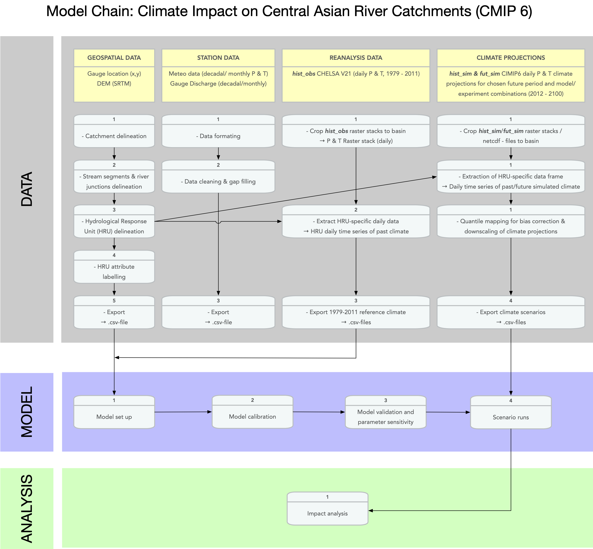

Part II: Data Sources, Retrieval and Preparation
In this Chapter and its Sections, we will discuss how to retrieve, prepare and process the data that is required for hydrological modeling.
Data include - in-situ station data, - geospatial data, - snow and glacier data, and - climate reanalysis and projections data.
As will become clear, the preparation of these data requires a substantial amount of work, local storage space and, in some instances, computational power.
Data needs vary according to the modeling approach and the model chain. First, the preparation of the discharge data as described in ?@sec-discharge-station-data is a necessary step for data quality control independent of the type of hydrological modeling approach it is aimed for. The ?@sec-geospatial-data shows the necessary geospatial analysis steps for basin delineation and the generation of the required input files for physically-based modeling using RSMinerve as described in Chapter ?@sec-hydrological-modeling and the ?@sec-hydrological-hydraulic-modeling.
The ?@sec-snow-and-glacier-data and (climate-data?) demonstrate the generation of time series data for individual hydrological response units with regard to glacier contributions and climate forcing.
The following diagram shows the entire modeling chain for hydrological modeling using RSMinerve. It shows that the data preparation step involves many interrelated components that partially depend on each other in a sequential way. This Chapter aims at carefully working through this modeling chain to carefully demonstrate the preparation of all the relevant data.
